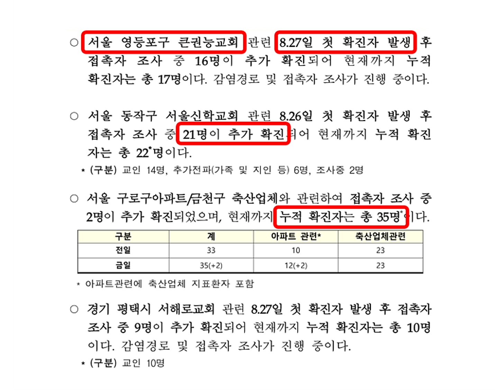
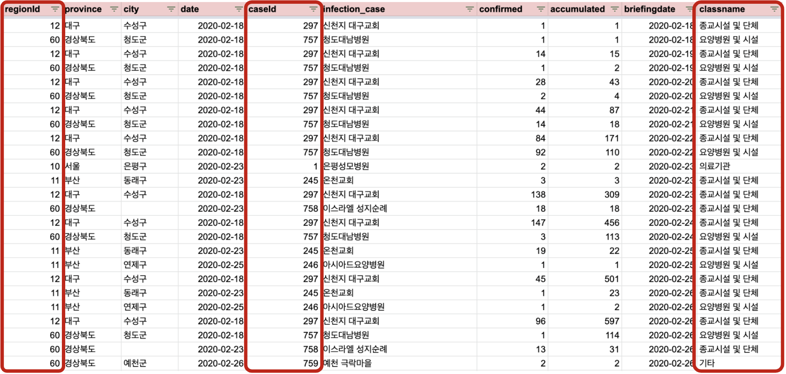

숨겨진 정보를 데이터로!
집단감염 데이터 분석
section 2
Contents
-
분석 목적
집단감염 데이터를 수집한 배경과 목적 -
데이터 수집 과정
정례브리핑 파일 속 숨겨진 집단 감염 정보 수집 -
분석 결과
업종별 집단감염 건 수 및 확진자 수, 지역별 집단감염 건 수 및 확진자 수 -
결론과 제언
집단감염 데이터의 현 위치와 발전 방향
Team.Cayley
분석 배경 및 목적
방역정책을 위한 집단 감염 정보
데이터 수집 기준
-
이용자 접근성
이용자가 쉽게 접근할 수 있는 데이터인가? -
오픈 데이터
저작권 정책이 명시되어 있는 공개된 데이터인가? -
가공 용이성
기계로 처리하기 용이한 데이터인가? -
지속성
코로나19 첫 확진자 발생부터 현재까지의 데이터가 모두 존재하는가?

정례브리핑 파일 속
정례브리핑 파일 속
'숨겨진' 집단감염 정보
코로나바이러스감염증-19 국내 발생 현황 정례브리핑 中 집단감염 관련 내용
- 집단감염 장소
- 첫 집단감염 발생일
- 당일 확진자 수
- 누적 확진자 수
- 일부 감염경로 정보
집단감염 정보를 데이터화 해보자!
Team.Cayley
데이터 수집 과정

있는 정보
- 집단감염 장소
- 첫 집단감염 발생일
- 당일 확진자 수
- 누적 확진자 수
- 일부 감염경로 정보
없는 정보
- 지역 ID
- 집단감염 사례 ID
- 분류 기준
데이터 오류
집단 감염 장소명의 두드러진 변화
Team.Cayley
완성된 집단감염 데이터 확인하기 (~2/28)
Team.Cayley
집단감염 데이터 분석 결과
집단감염 데이터 분석
1. 분류기준별 집단감염 현황
2. 지역별 집단감염 현황
집단감염 데이터 분석
월별 집단감염 건 수
1. 분류기준별 집단감염 현황
a. 분류기준별 집단감염 건수 (월별)
1. 분류기준별 집단감염 현황
b. 분류기준별 집단감염 건수 (누적)
1. 분류기준별 집단감염 현황
c. 분류기준별 집단감염 확진자 수 (월별)
1. 분류기준별 집단감염 현황
d. 분류기준별 집단감염 확진자 수 (누적)
2. 지역별 집단감염 현황
a. 지역별 집단감염 건수 (누적)
2. 지역별 집단감염 현황
b. 지역별 집단감염 확진자 수 (누적)
2. 지역별 집단감염 현황
c. 지역별 인구대비 집단감염 건수 (누적)
2. 지역별 집단감염 현황
d. 지역별 인구대비 집단감염 확진자 수 (누적)
2. 지역별 집단감염 현황
e. 지역별 집단감염 건수와 확진자 수 (누적)
Team.Cayley
결론과 제언
결론과 제언
활용성이 낮은 데이터 제공 형태
한글, pdf 파일 속의 정보는 데이터 활용에 제약
→ csv, excel 혹은 공공데이터 API 형식으로 제공 요청
→ 중복 집단명 구분 위한 집단 ID, 일관적인 집단명, 체계적인 집단 분류 기준과 같은 풍부한 데이터 제공
Team.Cayley